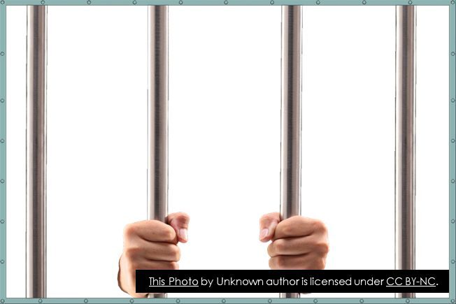

CHCAGE013 Work effectively in aged care · Lesson 4
Keeping people safe
Elder abuse: who is at risk, the signs, and what you do. Then the rules for restrictive practices.
This lesson is about protecting older people from harm. Some topics are hard to talk about. If something in this lesson upsets you, talk to your teacher. You will learn how to recognise abuse, what to do about it, and the strict rules for restrictive practices. On Wednesday you will use this in Mary's simulated shift.
Abuse can happen to anyone. But in some situations the risk of abuse is higher. Often it is because the person depends on others, or the carer is stressed.
Listen to the explanation
NP10 S2 P1The person lives with a disability.
NP10 S2 P2The person depends on others for daily care.
NP10 S2 P3The person lives with dementia or another cognitive impairment (problems with memory and thinking).
NP10 S2 P4Poor quality relationships, or a history of family violence, abuse or conflict.
NP10 S2 P5Low social support or social isolation: the person sees very few people.
NP10 S2 P6Low income or poverty.
NP10 S2 P7Poor physical health, or mental health problems such as depression.
NP10 S2 P8Alienation from the community: the person feels cut off and does not belong.
NP10 S2 P9In aged care homes: resident-to-resident abuse.
NP10 S2 P10Unregulated restrictive practices: restrictions used without following the rules (see slide 7).
Watch out This is about what makes a person more vulnerable (easier to harm), for example dementia or isolation. It is not about who the abuser is.
3 Signs of abuse (1): financial, physical, psychological **
A sign is something you see or hear that tells you something may be wrong. One sign alone does not prove abuse. But you must report what you notice. Flip the cards.
Listen to the explanation
Financial abuse
Someone misuses or takes the person's money or belongings.
The person cannot get to their own money or bank account.
Strange withdrawals from their account.
Not enough money for normal things like food or bills.
Valuables or belongings go missing.
Receipts for unusual purchases.
Physical abuse
Someone hurts the person's body.
Bruises, swelling, cuts or burns that nobody can explain, including cigarette burns.
Broken bones or dislocations that nobody can explain.
Rope marks on any part of the body.
Injuries to the teeth, eyes or ears.
Bite marks.
The person seems afraid of a certain person.
Psychological or emotional abuse
Someone hurts the person with words or behaviour: threats, put-downs, ignoring them.
Anxiety attacks.
Self-harm.
Challenging behaviours.
Being very compliant (always agreeing, doing anything they are told).
Saying they feel worthless, low self-esteem.
Depression, withdrawn from people.
Fear of a certain person.
Try itWhich type of abuse?
Sort each sign into the type of abuse it most likely shows.
The notes above will blur while you try. You can peek any time.
Follow your workplace's Incident Management System (IMS). The steps are:
Listen to the explanation
NP10 S5 P1Make sure the person is safe right now. If they are in danger right now, call the police (000).
NP10 S5 P2Report to your supervisor straight away.
NP10 S5 P3Write down (document) what you saw and heard: the facts, the date and time, and the person's own words.
NP10 S5 P4Keep it private: only talk to the people who need to know (privacy and confidentiality).
NP10 S5 P5Do not promise to keep it a secret. Explain kindly that you must pass it on to keep the person safe.
NP10 S5 P6Do not investigate it yourself, and do not confront the person you think is the abuser. Your supervisor follows the process from here.
Click the picture to see it full screen.
Watch out In your job you report to your supervisor and follow the IMS. You do not go straight to the Ombudsman. You only call the police yourself if there is danger right now.
Try itPut the steps in order
Use the arrows or drag the steps into the right order.
The notes above will blur while you try. You can peek any time.
Two more short forms. Remember: full words first, then what it means.
Listen to the explanation
NP10 S6 P1SIRS: Serious Incident Response Scheme. A scheme run by the Aged Care Quality and Safety Commission to reduce abuse and neglect of older people in government-funded aged care.
NP10 S6 P2SIRS started in residential care on 1 April 2021, and in home care on 1 December 2022.
NP10 S6 P3Under SIRS, providers must report serious incidents (for example abuse) to the Commission within set time limits.
NP10 S6 P4IMS: Incident Management System. The system each workplace uses to report and manage incidents, for example suspected abuse, falls or medication errors.
NP10 S6 P5A good IMS helps the workplace find risks, fix problems, train staff and stop it happening again. Every provider must have one.
Watch: Aged Care Quality and Safety Commission: What is the Serious Incident Response Scheme?
Try itSIRS or IMS?
Choose the right answer.
The notes above will blur while you try. You can peek any time.
A restrictive practice is anything that limits a person's rights or their freedom to move. There are 5 types.
Listen to the explanation
NP10 S7 P1Chemical restraint: using a medicine to change or control a person's behaviour.
NP10 S7 P2Environmental restraint: limiting where a person can go or what they can reach, to control behaviour. Example: putting the person's walking frame out of reach.
NP10 S7 P3Mechanical restraint: using a device to stop or limit movement, to control behaviour. Examples: bed rails, a lap belt in a wheelchair.
NP10 S7 P4Physical restraint: using physical force (hands or body) to stop or limit movement. (Gently guiding a person away from danger is not restraint.)
NP10 S7 P5Seclusion: keeping a person alone in a room or space they cannot leave.

Watch: What are restrictive practices?
Watch: Types of restraint
Try itName the restraint
Match each example to the type of restrictive practice.
The notes above will blur while you try. You can peek any time.
There are strict rules. A restrictive practice is never a shortcut. Two rules are a must in every answer: the behaviour support plan and monitoring.
Listen to the explanation
NP10 S8 P1It is used only as a last resort, after other ways to support the person's behaviour have been tried and written down.
NP10 S8 P2A behaviour support plan must be in place whenever a restrictive practice is considered or used.
NP10 S8 P3There must be informed consent from the person, or their substitute decision maker.
NP10 S8 P4An approved health practitioner who knows the person well must assess them as a risk of harm to themselves or others. All of this is written down.
NP10 S8 P5The person must be monitored for any bad effects (side effects) and for their general wellbeing.
NP10 S8 P6How well it works must be monitored (its effectiveness).
NP10 S8 P7It must be the least restrictive option, for the shortest time possible.
NP10 S8 P8For chemical restraint: a medical practitioner or nurse practitioner assesses the person and prescribes the medicine, and it is written in the care plan.
Click the picture to see it full screen.
Using a restrictive practice without following these rules is a reportable incident under SIRS. As a support worker, follow the behaviour support plan, never use a restriction that is not in the plan, and report anything you are worried about.
Watch: Restrictive Practices: Max
Try itRule check
Choose the best answer.
The notes above will blur while you try. You can peek any time.